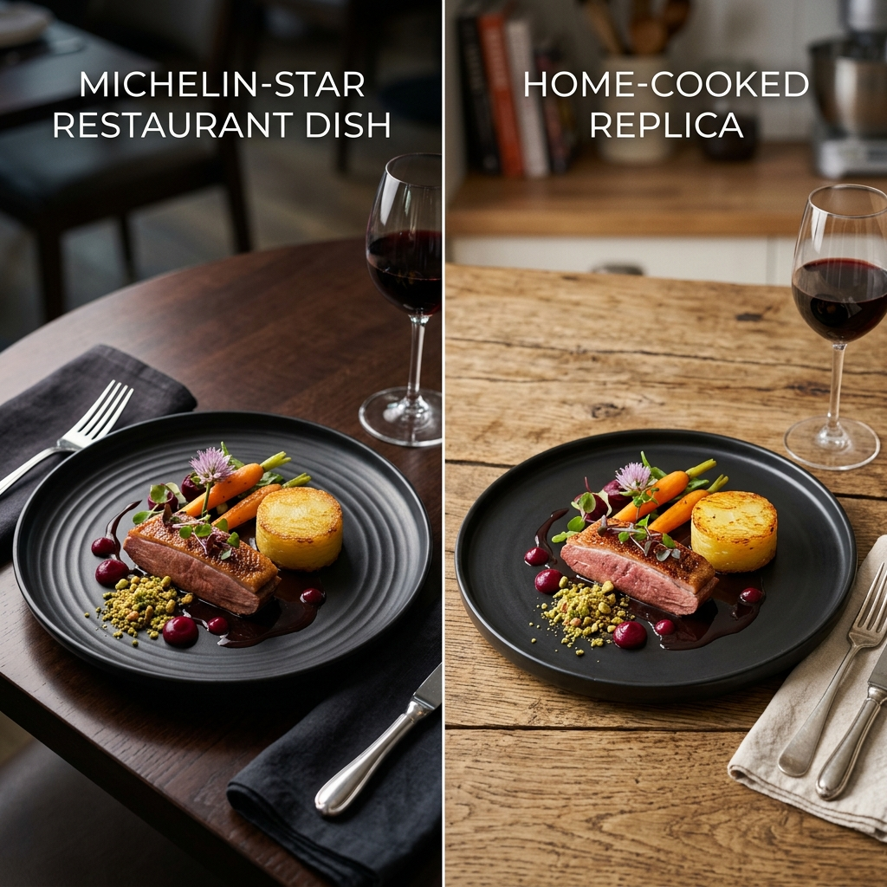
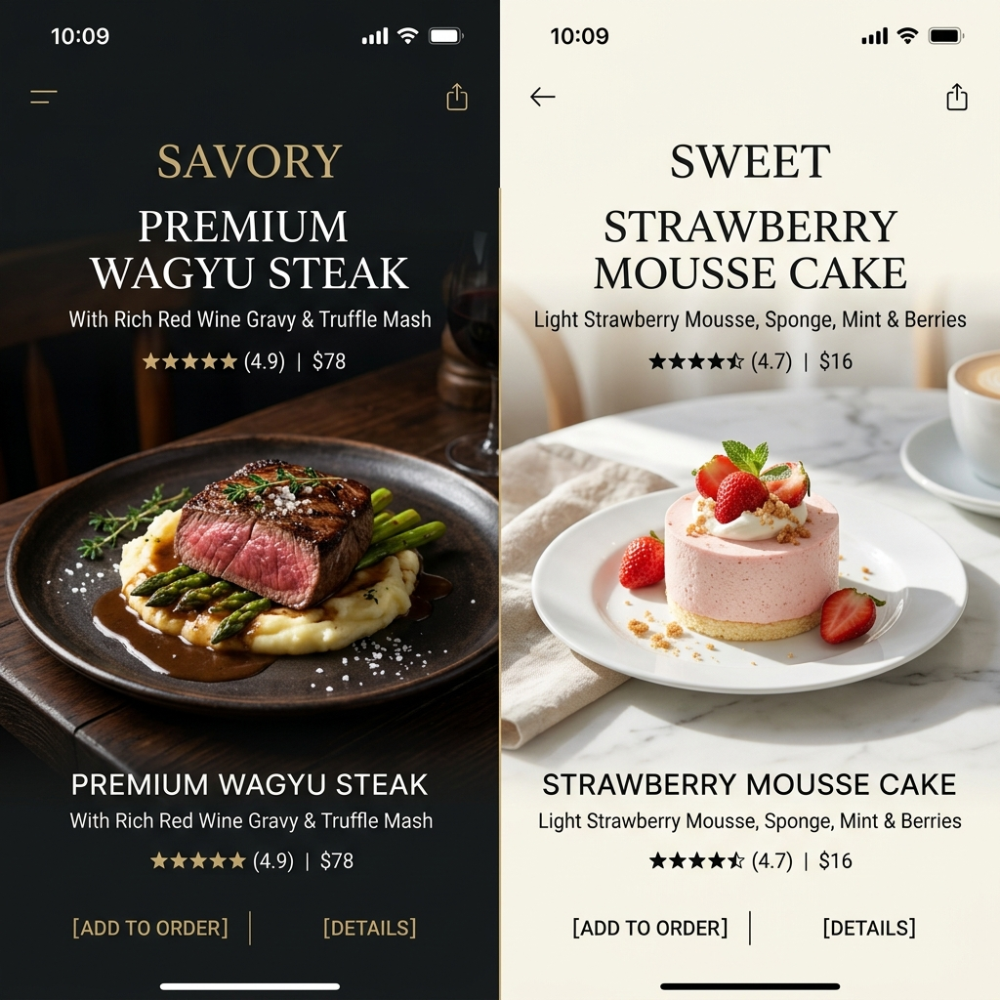
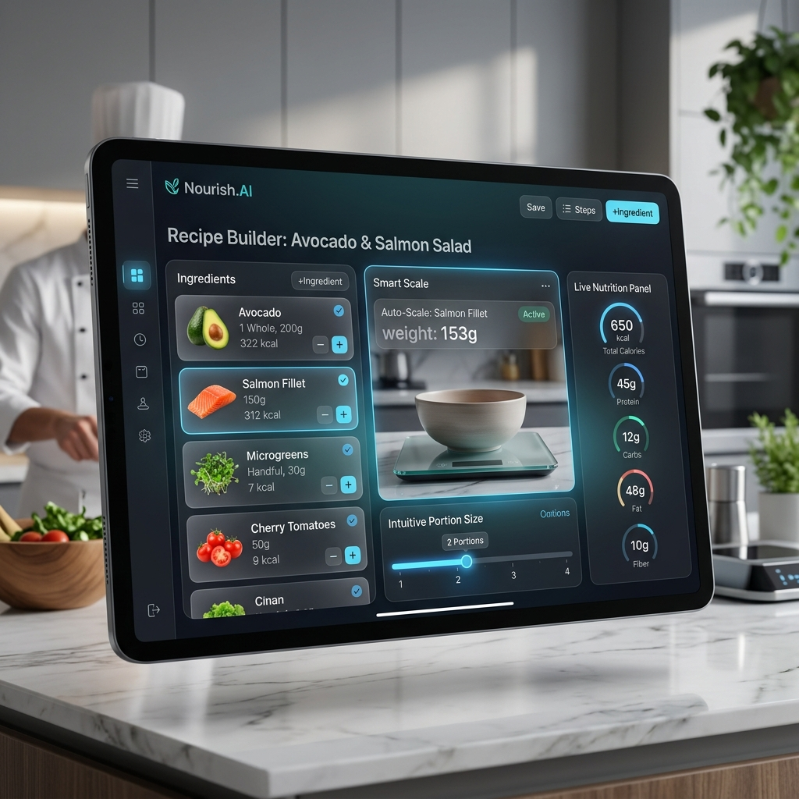
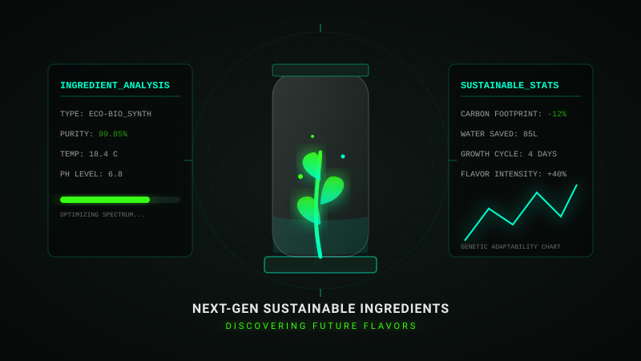

แกะสูตรอาหารลับจากร้านดังทั่วโลก
วิเคราะห์ส่วนผสมทางวิทยาศาสตร์ ถอดรหัสรสชาติ และทำเองได้ง่ายๆ ที่บ้านคุณ

เหมือน 96%ราเมนซุปกระดูกหมูสูตรลับ (Ichiran Style)
ถอดสูตรน้ำซุปทงคัตสึเข้มข้น และซอสแดงเผ็ดร้อนอันเป็นเอกลักษณ์ดั้งเดิม

เหมือน 94%ดับเบิ้ลชีสเค้กสตรอว์เบอร์รี (Pablo Style)
วิเคราะห์อัตราส่วนแป้งและชีสเพื่อเนื้อสัมผัสที่นุ่มละลายในปากเย้ายวนใจ
มีวัตถุดิบอะไรในตู้เย็นบ้าง?
ติ๊กเลือกวัตถุดิบที่คุณมี แล้วระบบ GastroLab จะแนะนำสูตรฟิวชันสุดพิเศษให้ทันที!
เลือกวัตถุดิบเพื่อประมวลผลสูตรฟิวชัน...
เครื่องสเกลสัดส่วนสูตรอาหารอัจฉริยะ
ปรับขนาดเสิร์ฟเพื่อคำนวณสัดส่วนวัตถุดิบโดยอัตโนมัติด้วยระบบแม่นยำ
สูตรแนะนำ: แซลมอนย่างทรัฟเฟิลครีมซอส
- แซลมอนสด: 300 กรัม
- เนยสดแท้: 30 กรัม
- ซอสทรัฟเฟิล: 2 ช้อนโต๊ะ
- เฮฟวี่ครีม: 100 มิลลิลิตร
- อะโวคาโดบด: 1 ผล

คลังวัตถุดิบแห่งอนาคต (Next-Gen Ingredients)
นวัตกรรมแห่งอาหารเพื่อความยั่งยืนและการสร้างสรรค์สิ่งใหม่

สปอร์เรืองแสง Eco-Bio Synth
พืชสมุนไพรและสาหร่ายเซลล์เดี่ยวเพาะเลี้ยงในห้องแล็บที่ให้รสชาติอูมามิสูงและเป็นมิตรกับสิ่งแวดล้อม 100%
Edible Microgreens (โฮโลแกรมสแกน)
ผักสมุนไพรขนาดจิ๋วที่ผ่านการควบคุมสเปกตรัมแสงเพื่อให้ได้รสสัมผัสและกลิ่นหอมแรงขึ้น 40%
บทเรียนและคำแนะนำจากเชฟชั้นนำระดับโลก
เรียนรู้เทคนิคการปรุงอาหารในระดับวิทยาศาสตร์และศิลปะขั้นสูง
ฟีดข้อมูลการวิเคราะห์แบบเรียลไทม์ (LIVE TELEMETRY)
> รันโหมดการคำนวณความร้อนและเทคนิคพิเศษของเชฟ...
> ระบบสแตนด์บาย รอกดเริ่มวิดีโอ
เครือข่ายเชฟและผู้รักการทำอาหารระดับโลก
แลกเปลี่ยนข้อมูล ท้าทายความสามารถ และโชว์ผลงานสูตรแกะของคุณสู่สากล
การแข่งขันประจำสัปดาห์
ทำอาหารคาว/หวานจากสูตรแกะกล่องของ GastroLab แล้วส่งภาพถ่ายหรือคลิปสั้นของคุณเพื่อประกวดรับใบรับรองระดับเชฟ